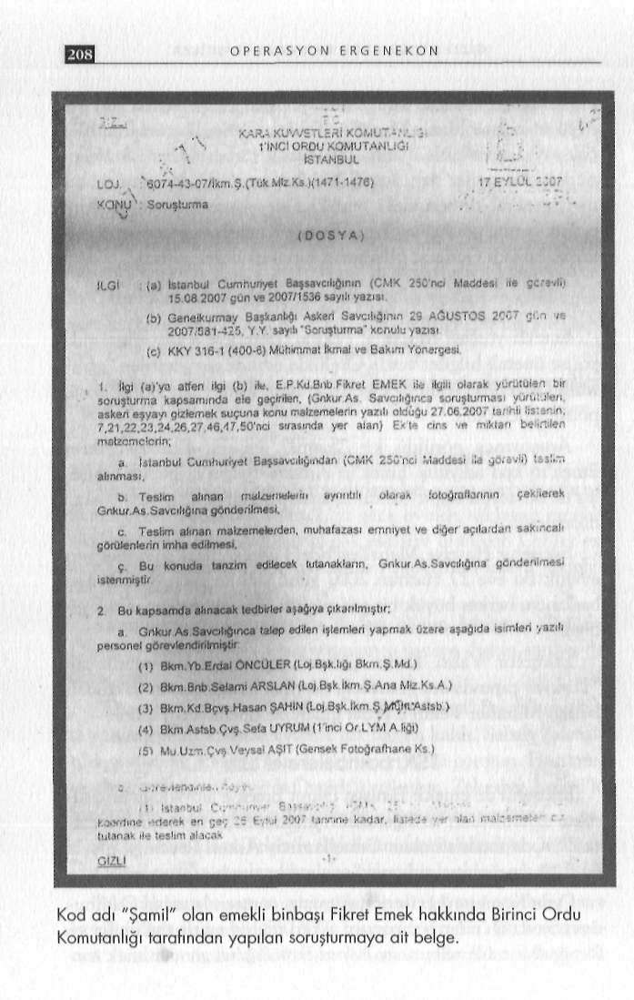

G İ Z L İ B E L G E L E R D E K A R A N L I K İ L İ Ş K İ L E R
di. Not defterindeki bir kayıtta ise başka isimler vardı: Muzaffer her çevreden insanlar vardı, asker, polis ve her çevreden ileri gö
Tekin, İsmail Nova, Ben, Rafet Abim, Füsun Hanım, Sevgi Ererüşlü insanlar olurdu. Muzaffer Tekin'e herkes komutanım der nerol, Kemal Kerinçsiz, Levent Temiz, Hanifi, Abdullah Ağar.
çok saygı duyarlar. Şu anda tuğgeneral rütbesinde muazzaf ko
Not defterindeki dikkat çeken bir başka bölüm: "Danıştay-numdaki insanlar dahi kendisine 'komutanım' der. Zaman za
Şemdinli-Cem-Bitlis-Hablemit"
man general rütbesindeki büyükler de ziyaretine gelirdi. İsim olarak benim gördüğüm Tuzla Piyade Komutanı geçen sene gel
Danıştay saldırısı, Şemdinli davası, öldürülen JİTEM'ci Cem mişti. Emekli General Muammer Ünal da oraya gelirdi."
Ersever, kuşkulu uçak kazasında hayatını kaybeden Jandarma eski Genel Komutanı Orgeneral Eşref Bitlis ve faili meçhul cina
Kod adı Şamil
yete kurban giden Doç. Dr. Necip Hablemitoğlu'nun isimlerinin Emekli yüzbaşı Muzaffer Tekin, Ümraniye soruşturmasında yan yana sıralanması ne anlama geliyordu?
polise önemli bilgiler verdi. Özellikle evinde ele geçirilen "gizli"
Oztürk kendini şöyle savundu: "Bir yerde gündeme getirilen Milli Güvenlik Siyaset Belgesi'yle ilgili "Şamil'den aldım" sözü, internet ortamı içerisinde gelen bir dizgedir. Ben oradan aldım."
polise ipucu oldu.
"Generaller bile komutanım der"
Araştırınca görüldü ki; "Şamil", emekli Binbaşı Fikret Emek'in kod adıymış. Emek'in Ankara Balgat'ta bir ve Eskişe
Mahmut Oztürk, Danıştay saldırısından sonra şüpheli sıfatıyhir'de iki adresi tespit edildi. Eş zamanlı olarak üç adrese baskın la aranırken Muzaffer Tekin'i bir gece evinde saklayan emekli düzenlendi.
astsubay. İkisi arasındaki ilişki çok eskilere uzanıyor. Oztürk'ün Eskişehir Hayriye Mahallesindeki adres, Emek'in annesinin astsubay olmasında Tekin'in katkısı büyük. Bu iddiayı, ifadeleeviydi. Bu eve 27 Haziran 2007 günü sabaha karşı düzenlenen rinde ikisi de doğruluyor.
baskında, herkes büyük bir şok geçirdi. Ev, âdete cephanelik gi
Ümraniye soruşturmasında ifadesi alınan Mahmut Oztürk, biydi.
Danıştay saldırısından sonra yaşanan o geceye ilişkin soruyu da Eskişehir Valisi Kadir Çahşıcı, operasyondan mutluydu: cevapladı:
"Türkiye çapında ses getirecek, uzantısı kamuoyunun yakından
"Danıştay olayında Zekeriya Oztürk ve İsmail Paker'le birlikbildiği Muzaffer Tekin'e kadar giden bir operasyon yapıldı."
te yanıma geldi. O gece evimde tek başına kaldı. Sabah kahvaltılık götürmek için gittiğimde intihar ettiğini gördüm. Hastane
TSK, bombalara el attı
ye götürmesi için Zekeriya Öztürk'ü çağırdım. Zekeriya, İsmail'le Eskişehir'de emekli Binbaşı Fikret Emek'e ait olduğu öne sübirlikte geldi. Hastaneye götürmeden pansuman yaptım."
rülen el bombaları ve diğer askeri mühimmatla ilgili soruşturma
Bu olaydan sonra Tekin'le ilişkilerini sınırlandırdığını anlatan ya TSK da müdahil oldu. Genelkurmay Askeri Savcılığı, olayla Oztürk, Tekin'in sanılandan daha çok itibarlı olduğunu söyledi: ilgili "Askeri eşyayı gizlemek" suçundan ayrı bir soruşturma açtı.
"Ancak zaman zaman görüştük. Benden 1 ay önce borç para Ordu Komutanlığı ise soruşturmayı yürüten İstanbul Cumhuistedi ve kendisine bin 500 YTL borç para verdim. Bu borcu eviriyet Savcılığı'ndan söz konusu askeri mühimmatla ilgili bilgi ve nin yanında verdim. Bürosuna önceden giderdim. Gittiğimde fotoğrafların Genelkurmay Askeri Savcılığı'na gönderilmek üze-

G İ Z L İ B E L G E L E R D E K A R A N L I K İ L İ Ş K İ L E R
re kendilerine teslim edilmesini istedi. Kurmay Başkanı Tümgeneral İbrahim Onbay imzasıyla gönderilen yazıda, bu işlemleri takip etmek üzere Yarbay Erdal Öncüler, Binbaşı Selami Arslan, Kıdemli BaşçavLiş Hasan Şahin, Astsubay Çavuş Sefa Uyrum ve Uzman Çavuş Veysel Aşit'in görevlendirildiği belirtildi.
Doğuş Factoring skandali
Doğuş Factoring'de Ümraniye sanığı Muzaffer Tekin'in "hissedar", Danıştay Davası Sanığı Alparslan Arslan'ın da "şirket avukatı" olarak görev yaptığının ortaya çıkması, 2003 yılında öldürülen ve uyuşturucu kaçakçılığı yaptığı iddia edilen şirket hissedarlarından Ertuğrul Yılmaz'ın ölümüyle ilgili iddiaları Ümraniye soruşturmasına taşıdı.
Gerçekten ilginç bir kombinezon.
Bu ilişkiler ağı tüm yönleriyle ortaya çıkarılır ve iddialar kanıtlanabilirse; kutsal değerler üzerinden devleti yeniden yapılandırma projesini yürüten Ergenekon, kilise ayininden sonra uyuşturucu pazarında boğulabilir. O açıdan, 24 Haziran 2006 tarihinde İstanbul İstihbarat Şubesi'nce hazırlanan ve Ümraniye soruşturmasına eklenen rapor, tarihî nitelikte. Kuşkusuz bu rapor, istihbarı bilgileri içeriyor ve hukukî açıdan delil olarak kullanılması mümkün değil. Ancak, iddialar üstü örtülecek türden iddialar değil.
Özellikle rapordaki şu bölüm çok çarpıcı:
"Nezahat Keleş isimli bayanın hem Doğuş Factoring Hizmetleri A.Ş'nin ortağı hem de Ertuğrul Yılmaz'ın imam nikâhlı eşi olduğu, kardeşi Müzeyyen Keleş'in ise Ayhan Parlak'ın imam nikâhlı eşi olduğu, 2000 yılı içerisinde Ertuğrul Yılmaz'ın uyuşturucu madde kaçakçılığından elde ettiği düşünülen bir miktar parayı değişik zamanlarda bazı bankalar üzerinden Nezahat Keleş
adına transferini gerçekleştirdiği,
Ayrıca, 17.05.2006 günü saat 10.00 sıralarında Danıştay 2.
Dairesi üyelerine yönelik yapılan silahlı saldırının faili olan Al-